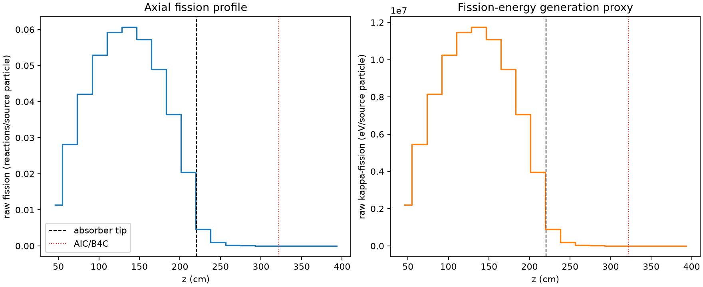
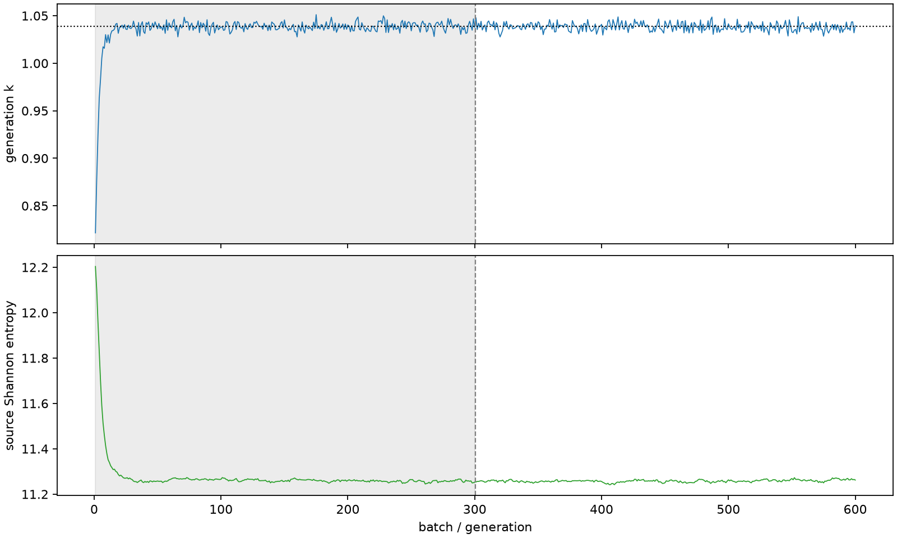

| field | value |
|---|---|
| experiment | V2-STAGE_128_OGRENCI_04-0020 |
| k | 1.0385621697023948 |
| MC standard error | 0.000167311072912642 |
| seconds | 1162.1660165309986 |
| acceptance | not_assessed |
| convergence | review_required |
Completed is output integrity only; physical and statistical review required. Zero tallies do not prove zero production or zero uncertainty.
| diagnostic | value |
|---|---|
| geometric fuel voxels | 5280 |
| zero fission tally voxels | 517 |
| low signal fuel voxels | 1627 |
| low signal fission share | 5.763468690883232e-05 |
| low signal kappa share | 5.766821546984319e-05 |
| important fission share | 0.9500421016210586 |
| previous filter included | 3653 |
| duration estimate s | 1562.5173488400023 |
| actual minus estimate s | -400.35133230900374 |
| fission relative MC error | statistics |
|---|---|
| all_geometric_fuel | {"voxels": 5280, "positive_mean_voxels": 4763, "zero_mean_voxels": 517, "undefined_relative_error_voxels": 517, "median": 0.012183403877207625, "p95": 0.9884900400892732, "maximum": 1.0000000000000002} |
| low_signal | {"voxels": 1627, "positive_mean_voxels": 1110, "zero_mean_voxels": 517, "undefined_relative_error_voxels": 517, "median": 0.6596250015392118, "p95": 1.0, "maximum": 1.0000000000000002} |
| important_95pct | {"voxels": 2324, "positive_mean_voxels": 2324, "zero_mean_voxels": 0, "undefined_relative_error_voxels": 0, "median": 0.00657470022553394, "p95": 0.009826463976292499, "maximum": 0.011338388270293204} |
| outside_previous_filter | {"voxels": 1627, "positive_mean_voxels": 1110, "zero_mean_voxels": 517, "undefined_relative_error_voxels": 517, "median": 0.6596250015392118, "p95": 1.0, "maximum": 1.0000000000000002} |
| kappa_fission relative MC error | statistics |
|---|---|
| all_geometric_fuel | {"voxels": 5280, "positive_mean_voxels": 4763, "zero_mean_voxels": 517, "undefined_relative_error_voxels": 517, "median": 0.012167990834761921, "p95": 0.988559143454098, "maximum": 1.0000000000000002} |
| low_signal | {"voxels": 1627, "positive_mean_voxels": 1110, "zero_mean_voxels": 517, "undefined_relative_error_voxels": 517, "median": 0.6596705194116863, "p95": 1.0, "maximum": 1.0000000000000002} |
| important_95pct | {"voxels": 2324, "positive_mean_voxels": 2324, "zero_mean_voxels": 0, "undefined_relative_error_voxels": 0, "median": 0.0065658651545317005, "p95": 0.009813328732396034, "maximum": 0.011324316341927963} |
| outside_previous_filter | {"voxels": 1627, "positive_mean_voxels": 1110, "zero_mean_voxels": 517, "undefined_relative_error_voxels": 517, "median": 0.6596705194116863, "p95": 1.0, "maximum": 1.0000000000000002} |
| axial bin | fission share | kappa-fission share |
|---|---|---|
| 1 | 0.026744091649751636 | 0.026745392669007315 |
| 2 | 0.06640910329718755 | 0.06640885685966932 |
| 3 | 0.09952242394795081 | 0.09952164490618941 |
| 4 | 0.12505966188968787 | 0.12505853851054924 |
| 5 | 0.1398493824197593 | 0.13984860458974405 |
| 6 | 0.14314569150726658 | 0.14314402772957946 |
| 7 | 0.13504186035218474 | 0.13504076596820677 |
| 8 | 0.1157185358498775 | 0.11571754725318946 |
| 9 | 0.08611983877555589 | 0.08611900137352033 |
| 10 | 0.04832286995383967 | 0.04832313687094028 |
| 11 | 0.01103548443163371 | 0.011039895195899714 |
| 12 | 0.0023470791353685148 | 0.002348239971778014 |
| 13 | 0.0005204124942160635 | 0.0005206955128332628 |
| 14 | 0.000124483262700159 | 0.00012454892972467294 |
| 15 | 3.0346386734825734e-05 | 3.0361503382002032e-05 |
| 16 | 6.214930017603581e-06 | 6.220094983456679e-06 |
| 17 | 1.690981147037872e-06 | 1.6926199887032167e-06 |
| 18 | 5.646665128525542e-07 | 5.648224364770867e-07 |
| 19 | 2.4306372501588517e-07 | 2.4354413271701146e-07 |
| 20 | 2.1004882732718377e-08 | 2.107424532799539e-08 |
Histories include the inactive-to-active transition at batch 300. kappa-fission approximates fission energy production, not total heat deposition.

